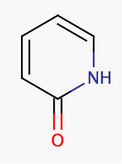
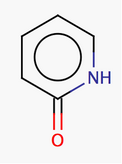

The two methods approach the question differently. The general method tries to incorporate mesomeric and tautomeric rearrangement, as in 2-pyridone, while the basic method does not. In the basic method the external double bond breaks the formation of an aromatic ring.
|
 |
|
 |
|
Molecule in aliphatic form |
Basic aromatization |
General aromatization |
|
Converting structure from Kekulé form to aromatic form |
Converting structure from aromatic form to Kekule form |